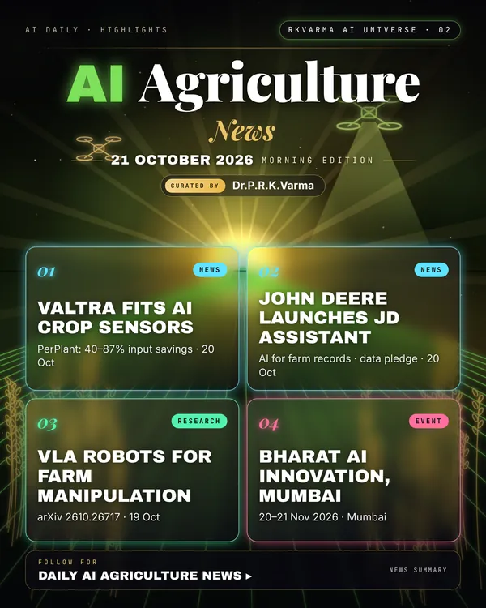

Latest updates · 21 October 2026
In the full issue →AI crop sensing is becoming factory-fitted: Valtra will offer PerPlant's camera-based AI sensor on new tractors, and John Deere has launched an AI assistant for farm records alongside a farmer data pledge.
Research, industry & policy
- Valtra to factory-fit PerPlant's AI crop sensor, iVT International · 20 Oct 2026: The two-camera roof unit supports spot spraying, variable-rate fertiliser and fungicide, and crop mapping on A, G, N, T, Q and S Series tractors in selected European markets; PerPlant reports input savings of 40–87%.
- John Deere launches JD, an AI assistant in Operations Center, Farms.com · 20 Oct 2026: JD answers questions from years of stored farm records; an early access programme opens for US customers, alongside a Farmer Data Commitment that farmers control which third parties see their data.
- UAPB review maps AI's growing role in agriculture, Deltaplex News · 20 Oct 2026: University of Arkansas at Pine Bluff researchers reviewed 95 peer-reviewed studies from 2021 to 2025 on AI for irrigation, disease and pest detection, yield prediction and farm robots.
Journals & preprints
- Robot Learning with Vision-Language-Action Models for Agricultural Manipulation, arXiv 2610.26717 · 19 Oct 2026: Robotic manipulation in agricultural environments remains challenging due to variations in plant geometry, occlusion, and camera viewpoints.
- Bombadil: A Foundation Model for Plant Electrophysiology, arXiv 2610.26597 · 19 Oct 2026: Living plants, like animals, use electrical signals to carry information about their physiological state across their body, from roots to branches.
Conferences, workshops & events
- Bharat AI Innovation 2026, 20–21 Nov 2026 · Mumbai: Includes an AgriTech track.
Why it matters
Built-in sensors and assistants lower the cost of precision farming; the open question is who controls the data the machines collect.

